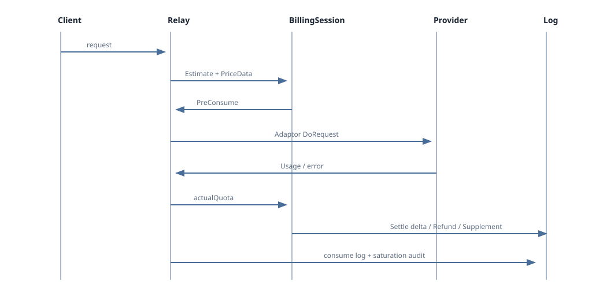

Chapter 05 · Billing
计费、Token 预估与 Usage 结算
先按请求估算并预扣，再用下游 Usage 结算差额。预扣不是最终消费，失败路径必须退款或回滚。
普通开发者先看：一笔请求的账

controller/relay.go:Relay读取并校验请求，调用service.EstimateRequestToken。relay/helper/price.go:ModelPriceHelper按模型/分组倍率或阶梯表达式生成PriceData.QuotaToPreConsume。service/billing_session.go:NewBillingSession检查余额并预扣；额度不足时不调用下游。- 下游返回 Usage 后，
service/billing.go:SettleBilling计算差额；实际更少退款，更多则补扣。 - 错误、客户端断开或无 Usage 时按错误分支回滚/使用安全回退，并写入日志。
Token 与价格的代码事实
| 阶段 | 函数/文件 | 输入与输出 |
|---|---|---|
| 文本/媒体估算 | service/token_counter.go:EstimateRequestToken | 消息、图片、音频、视频和文件 → EstimatedPromptTokens；开关见 CountToken、GET_MEDIA_TOKEN。 |
| 倍率价格 | relay/helper/price.go:ModelPriceHelper | PreConsumedQuota=500 为最低预估；model/group/completion/cache ratio 参与计算。 |
| 固定/任务价格 | price.go、TaskAdaptor | 按次、媒体数量、时长、分辨率等 PriceData.OtherRatios 计费；倍率必须为正且有限。 |
| 阶梯表达式 | pkg/billingexpr、price.go:modelPriceHelperTiered | 按输入/输出估算和表达式计算，使用统一 quota rounding。 |
资深开发者：不变量与边界
- 所有用户可控数量（
max_tokens、图片n、任务时长/批量）先验证上限；不要把无界 float 直接转 int。 - 使用
common.QuotaFromFloatChecked、QuotaRoundChecked、QuotaFromDecimalChecked，clamp 写入relayInfo.QuotaClamp并审计。 BillingSession.Reserve只增加预扣；Settle依据实际 quota 结算一次，避免重复扣费。- 跨渠道 retry 不重复整笔预扣；最终成功渠道的 Usage 决定结算。
- SQLite/MySQL/PostgreSQL 余额更新走 model/GORM 锁定路径，不能依赖方言 SQL。
可调参数
| 来源 | 参数 | 作用 |
|---|---|---|
| 环境变量 | CountToken、GET_MEDIA_TOKEN、GET_MEDIA_TOKEN_NOT_STREAM | 估算文本/媒体 Token 的开关。 |
| 环境/选项 | PreConsumedQuota（默认 500）、QuotaPerUnit（500000） | 最低预扣与额度换算单位。 |
| GlobalConfig | quota_setting.enable_free_model_pre_consume | 免费模型是否预扣。 |
| 倍率配置 | model/group/cache/completion ratio、tiered billing expr | 决定价格；修改后影响预扣及结算。 |
自检问题
- 请求失败时是否释放已预扣额度？
- 真实 Usage 缺失时是否有明确、非负的回退？
- 超大输入、时长或倍率是否被拒绝/饱和并审计？
- 重试两次是否只产生一次用户预扣记录？
代码证据：controller/relay.go、relay/helper/price.go、service/billing_session.go、service/billing.go、common/quota_math.go。